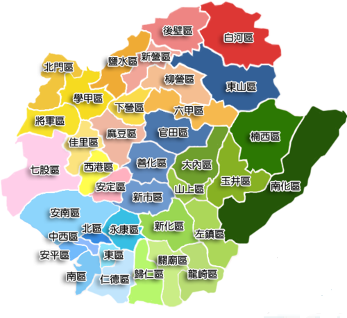
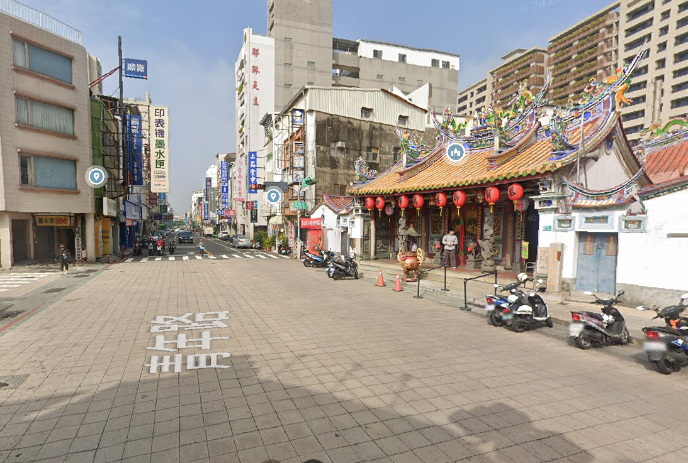

🧭
台南小導遊養成記
四年級上學期 · 第 1 課：旅行經驗與主題發想
第一節 · 找景點
① 台南，超好玩！
📝 你有去台南哪些地方旅遊過？打幾個字上去，看看全班拼出什麼台南地圖！
每年有好幾百萬人特地搭高鐵來台南玩。
如果有外國 YouTuber 要你當導遊帶路 —— 你是不是一片空白？😅
我們每天住在台南，把它當成「經過的地方」。但在別人眼中，這裡是特地要來的觀光勝地。今天我們用「觀光客的眼睛」重新看台南！
🙋 你帶人玩過台南嗎？
② 認識台南：行政區在哪裡？
台南這麼大，其實是分成好多個「行政區」管理的！
台南市總共有 37 個行政區！
民國 99 年，原本的「台南市」和「台南縣」合併升格，兩邊的區域全部改叫「區」——原台南市的 中西、東、南、北、安平、安南 6 區，加上原台南縣的 永康、仁德、新化、麻豆…等 31 個鄉鎮，合起來就是現在的 37 區。

🏫 看看我們學校的地址
701 臺南市東區中西里勝利路 10 號
🤔 勝利國小在哪一區呢？
🗺️ 景點配對：把景點拖進正確的行政區！
先來認識 6 個代表性的行政區。看看下面的景點，把它拖到地圖上正確的區域！
③ 換個角度看
同一間廟，「路過」跟「用觀光客的眼睛細看」，看到的東西差很多！
🚶 路過視角

如果只是經過，可能就覺得「喔，一間廟」。
🔍 觀光客細看視角
🤔 你發現「路過」跟「用觀光客的眼睛細看」，看到的東西有什麼不同？

▶
▶ 再看看觀光局會怎麼介紹台南：冬季旅遊，來台南正好玩！
📮 繳交學習單
確定都填好了嗎？按下面按鈕交給老師（可以重交，會覆蓋前一次）。
🎉